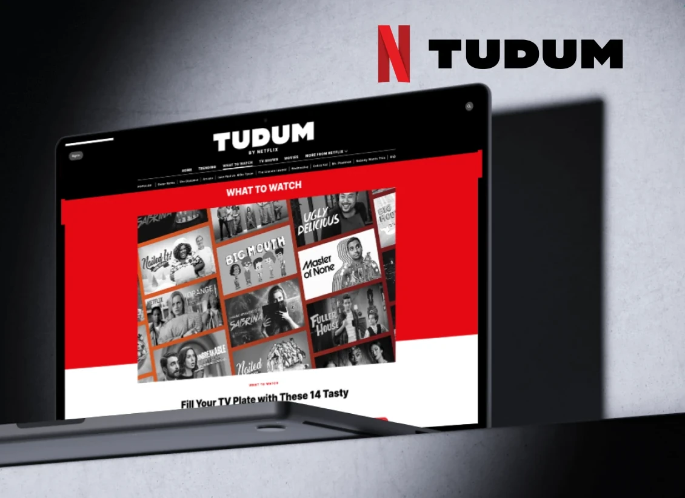
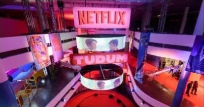
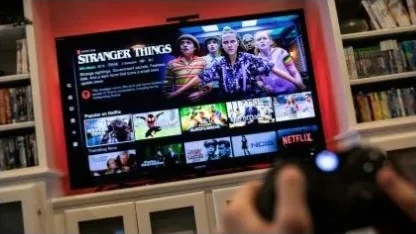
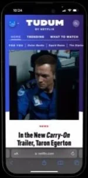
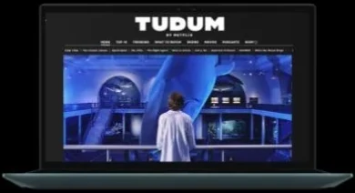
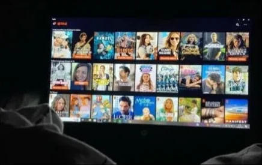
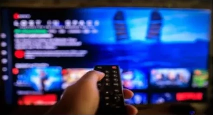

UX case study
Netflix’s Tudum: what makes a fan event work, and what could make it better.
Tudum is Netflix’s annual global fan event, celebrating its original content with sneak peeks, trailers, behind-the-scenes footage and live Q&A sessions.

- Role
- UX Designer – Researcher
- Type
- Independent case study
- Platforms
- Smartphone, laptop and smart TV
- Methods
- Expert review, competitive analysis, surveys, usability testing
The question
How well does Tudum engage fans, and how could UX principles make it more immersive and seamless?
What I did
Evaluated the event hands-on, compared it with rival fan events, surveyed Netflix users and tested it across devices.
The outcome
Three recommendations: guided onboarding, personalized experiences, and better mobile and multi-device navigation.
The study
Project overview
As a UX designer and researcher who’s an active Netflix user, I was curious how Tudum influences engagement, encourages community and strengthens the emotional connection between Netflix and its subscribers.
The goal: evaluate the event’s design, usability, interactivity and overall experience, and find how Netflix could improve Tudum by applying key UX principles.

The study
Background & research objectives
Tudum is part of Netflix’s broader strategy to strengthen its relationship with subscribers and build fan loyalty. I wanted to see how well it serves existing and potential subscribers: providing value, building community and encouraging deeper interaction with content.
Core research questions
- How effective is the event – at engaging users and building excitement?
- How does Netflix apply UX principles – such as accessibility, mobile optimization and personalization?
- How could Tudum – offer a more immersive, seamless experience?
- Which features – drive the most fan interaction and satisfaction?
The study
Study goals & business objectives
Study goals
- Evaluate engagement: how well Tudum excites fans and creates a memorable, interactive experience through live streams, Q&As, exclusive content and social integrations.
- Examine UX principles: accessibility, mobile optimization and personalization, across devices and for a global audience.
- Find opportunities: where design, interactivity or usability could make the event more immersive and engaging.
Business objectives
- Strengthen subscriber loyalty: deeper emotional attachment to Netflix originals, improving retention and reducing churn.
- Enhance brand perception: position Tudum as a fan-first platform that values its global audience, encourages community and offers exclusive, personalized experiences.
Research
Research & methodology
- Personal experience evaluation: I used Netflix during Tudum to assess the interface, navigation, interactivity and overall experience.
- Competitive analysis: compared Tudum with fan events from Disney+, Prime Video, Apple TV+ and HBO Max to find industry best practices.
- User surveys: an informal survey of fellow Netflix users on satisfaction, ease of use and emotional engagement.
- Usability testing: tested accessibility and usability on a smartphone, a laptop and a smart TV, to see how consistent the experience is.

Research
Competitive analysis
How Tudum compares with similar events from other major streaming services, by strengths, weaknesses and opportunities in fan engagement, brand loyalty and market positioning.
| Service | Subscribers | Event | Key features | Strengths | Weaknesses |
|---|---|---|---|---|---|
| Netflix | 301.63 million | Tudum | Exclusive content · behind-the-scenes access · live Q&A sessions · global availability · fan-centric activities | A comprehensive, immersive experience with a wide range of exclusive content that boosts engagement. | Little public data on user participation and engagement. |
| Disney+ | 200 million | D23 Expo · Disney+ Day | Exclusive premieres · special promotions · character-centric interactions · celebration of its IP | Builds on Disney’s huge IP portfolio, generating real excitement among fans. | Focuses mainly on existing franchises, which may limit appeal to new subscribers. |
| Prime Video | 122.7 million | Prime Video Presents: The Show Must Go On | Creator and star panels · diverse genres · exclusive sneak peeks · Amazon ecosystem integration | Highlights diverse content, appealing to a broad audience. | Less established as a marquee event than its competitors. |
| Apple TV+ | 25 million | Apple Events | Focus on quality · creator discussions · niche appeal · brand-first design | Emphasizes high-quality original content, in line with Apple’s brand. | Limited frequency and scale may mean lower overall impact. |
| HBO Max | 100 million | HBO Max Fan Fest | Event-tied releases · social media campaigns · exclusive previews · award-winning content | Uses acclaimed content to attract viewers. | No unified, recurring fan event, which may reduce ongoing engagement. |
Subscriber figures as reported at the time of the study.
Research
User surveys
An informal survey of 15–30 Netflix users (friends and colleagues) about their experiences with Tudum, focused on satisfaction and ease of use.
On ease of use, participants liked the straightforward layout and being able to switch devices seamlessly, for example starting on a phone and continuing on a TV.
Research
Usability testing
I tested Tudum’s accessibility and usability across devices to see how consistent and intuitive the experience is.

Smartphone
Strengths
- Responsive design: the layout adapts well to different screen sizes.
- Touch-friendly: buttons and menus are easy to tap.
- Streaming quality: smooth playback on mobile networks with adaptive resolution.
Weaknesses
- Navigation complexity: nested menus make specific content hard to find.
- Overlapping text: on smaller screens, text sometimes overlaps or gets cut off.
Laptop (web browser)
Strengths
- Intuitive navigation: a clear menu hierarchy and breadcrumbs for easy backtracking.
- Search: a robust search bar with auto-suggestions.
Weaknesses
- Accessibility shortcomings: limited keyboard navigation for people who rely on assistive technology.
- Inconsistent branding: some pages lack visual consistency, breaking the immersion.

Takeaways
Key findings
1. Event design & interface
The landing page was highly engaging, with high-quality video, animation and content-rich carousels, and it made live streams, trailers, exclusive content and highlights easy to reach.
Strengths
- Cinematic design: large visuals and immersive trailers set a premium, entertainment-driven tone.
- Clear navigation: sections like “Top 10,” “Trending” and “What to Watch” reduce cognitive load.
- Multi-device support: responsive on mobile, with more room to explore on desktop.
Opportunities for improvement
- Overwhelming for first-timers: a guided onboarding experience, such as an interactive tutorial or intro message, would help new visitors.
- Personalization: event content curated from each user’s watching habits, such as tailored trailers or announcements.
2. Accessibility & global reach
Tudum has to serve a global audience: multilingual support, accessibility for people with disabilities, and regional content.
Strengths
- Multi-language support: subtitles in many languages, plus dubbing or localized options on the live stream.
- Accessible features: closed captions and audio descriptions for people with hearing or vision impairments.
Opportunities for improvement
- Screen reader navigation: more descriptive alt text for images and video would help visually impaired users.
- Localized fan experience: region-specific content and events in local time zones.
3. Mobile experience
Mobile optimization was key, given how many people watch Netflix on phones and tablets.
Strengths
- Smooth streaming: minimal buffering, seamless transitions and easy-to-tap buttons.
- Responsive design: a clean layout on both phones and tablets.
Opportunities for improvement
- Limited interactivity on small screens: more compact features would make interactions smoother without clutter.
- Battery drain: long sessions are taxing; optimizing for lower power use would help people on the go.
Conclusion
Recommendations
Tudum connects with fans through exclusive content, interactive features and global reach. Its cinematic design, real-time interaction and social integration make it memorable, and three changes could raise the experience further.

1. Guided navigation & onboarding
An interactive onboarding tour of live streams, trailers and exclusive sessions for first-time visitors. Contextual reminders for upcoming Q&As and drops, based on each person’s interests. Progress indicators showing what they’ve seen and what’s left to explore.
2. Customized experiences
Personalized content curation from viewing history, highlighting related trailers and sneak peeks. Personalized notifications for the genres and shows each person follows. A customizable event homepage where people choose what they care about most, reducing overwhelm.
3. Mobile & multi-device navigation
Adaptive mobile navigation with a collapsible bar for live events, trailers and exclusives. Mobile-specific notifications that open live chat or polls directly. Multi-device sync, so people can start on a phone and pick up on a laptop where they left off.
Conclusion
Conclusion
With these improvements, Tudum could give people a more personalized, guided and intuitive experience that deepens engagement and their emotional connection to Netflix’s content and platform.

More case studies
Healthy HandParaillelThe Helper BeesGeisingerUT Health X CLITandem